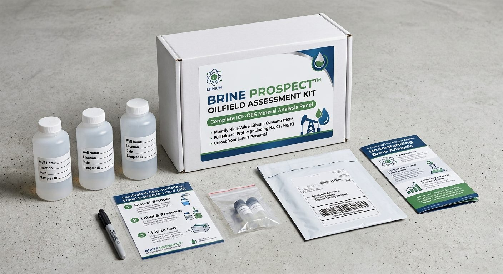

Mail-in lithium test for oilfield water
Find out how much lithium is in your water.
Brine Prospect is a sampling kit for produced water and oilfield brine. Fill the bottles at your well, tank battery or disposal facility, ship them in the prepaid mailer, and get back a lab-measured lithium concentration with a full mineral panel.
Join the waitlist and we will email you when kits are available. One email, no spam.

Why test
Every lithium offer starts with one number.
What a lithium right is worth depends on how many milligrams of lithium sit in each liter of water. Developers test before they make an offer. Most operators, disposal well owners and mineral owners have never seen a number for their own water, because the public data for most oilfields is a handful of old samples.
On 25,000 barrels a day, a 2.5% royalty pays about $30,400 a year at 14 mg/L and about $141,000 a year at 65 mg/L, with lithium carbonate at $15,000 a tonne and 75% recovery. Same wells, same contract, a different number.
| Analyte | Result, mg/L |
|---|---|
| Lithium (Li) | 28 |
| Sodium (Na) | 41,500 |
| Calcium (Ca) | 4,300 |
| Magnesium (Mg) | 690 |
| Potassium (K) | 560 |
At 25,000 barrels a day, water at 28 mg/L carries about 216 tonnes of lithium carbonate equivalent a year.
This is an example of the report layout. The values are made up for illustration and do not come from a real sample.
How it works
Three steps from the wellhead to a lab report.
Collect the sample
Fill the bottles where the water changes hands: the separator, the tank battery or the inlet to your disposal well. The instruction card shows where and how.
Label and preserve
Write the well name, location, date and sampler on each label. Add the preservative so the sample holds until it reaches the lab.
Ship to the lab
Seal everything in the prepaid return mailer. An independent laboratory runs the panel by ICP-OES and your report arrives by email.
In the box
Everything you need to take a clean sample.
- Three sample bottles, pre-labeled for well name, location, date and sampler ID
- Two preservative vials
- A laminated instruction card
- A permanent marker
- A prepaid return mailer addressed to the lab
- A short guide to reading your results
In the report
A lithium number, and what it means.
- Lithium concentration in milligrams per liter
- Sodium, calcium, magnesium and potassium, the full panel on the box
- A plain-language estimate for your volume, using the same math as the calculator on this site
Magnesium and calcium compete with lithium during extraction, so a developer reads those ratios as closely as the lithium number itself.
Who it is for
Built for the people with a stake in the water.
Mineral and land owners
If the lithium under your land or in your wells' water is yours, the concentration sets what it is worth. Ask the operator for a sample from a producing well on or near your land, or start with the calculator.
Operators
You produce the water and, in Texas, you likely own what is dissolved in it. Know the grade before a developer or a disposal contract decides it for you.
Disposal and water midstream
You take custody of thousands of barrels a day. If your agreements pass title at the inlet, the lithium may already be yours to lease.
What it is not
A screening result, not a certified one.
A sample you collect yourself has no independent chain of custody. A developer will resample before signing, and a lender will want certified work. One sample is also a snapshot, and water chemistry moves with the wells that feed it.
The kit answers a narrower question, and it is the first one: is this water worth a closer look, and where should the conversation start?
Free calculator
How much is your lithium lease worth?
Pick where your minerals are, enter your acres or your water, and drag the concentration slider. The spread between the low case and the high case is what a test settles. The example shows 40 net mineral acres in East Texas. The calculator page walks through the math.
Anyone making a serious offer has a number in mind for your water. Know yours first.
The kit measures the one number this estimate cannot know.
The Brine Prospect kit is out of stock. Join the waitlist and we will email you once, when kits are available.
Questions
Common questions about the kit
What does the Brine Prospect kit test for?
Lithium, plus sodium, calcium, magnesium and potassium, each measured in milligrams per liter by ICP-OES (inductively coupled plasma optical emission spectroscopy) at an independent laboratory. Lithium is the number that drives value. The other four tell a developer how hard the water will be to process.
Who can use the kit?
Anyone with legal access to the water: oil and gas operators, disposal well owners, water midstream companies, and mineral or land owners who can get a sample from a producing well. You need a sampling point such as a separator, a tank battery or a disposal well inlet.
Is a kit result enough to negotiate a lithium lease?
It is enough to know whether to take the conversation seriously and where to start it. It is a screening result from a sample you collected yourself, so a developer will resample before signing. Treat it as your own first number, not a certified one.
When will the kit be in stock?
The kit is currently out of stock. Join the waitlist and you will get an email as soon as kits are available to order.
How much does the kit cost?
The kit is $495. That covers the sample bottles, prepaid return shipping, the lab panel and your report.
Do I own the lithium in my produced water?
In Texas, usually the operator does. In Cactus Water Services v. COG Operating (June 27, 2025), the Texas Supreme Court held that produced water belongs to the mineral lessee unless the lease expressly reserves it. A disposal agreement can then pass that title on to the disposal company. The Brine Prospect guide to lithium mineral rights covers each case.
How much lithium does oilfield water need before it is worth extracting?
Studies built on U.S. Geological Survey data use about 65 mg/L as the lower limit for potentially economic production, and some sources use 100 mg/L. Public Permian Basin samples mostly fall between 1 and 30 mg/L, while Smackover project areas in Arkansas and East Texas run above 400 mg/L. Lower grades are not ruled out: the first commercial plants announced on Permian water sit on water that is already gathered and treated at scale.
More on ownership, royalties and grades in the guide to lithium mineral rights.
Waitlist
Be first to know when kits are available.
The Brine Prospect Oilfield Assessment Kit is out of stock. Leave your email and we will write once, when kits are available to order. Telling us who you are helps us stock the right amount.
We store your email, the role you pick and any numbers you entered in the calculator. We do not sell or share them. See the privacy note.